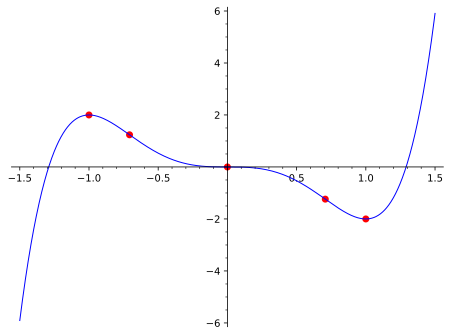

Domain and intercepts. The domain of
\(f\) is
\(\R=(-\infty, \infty)\text{.}\) The
\(y\)-intercept of the graph of
\(f\) is
\((0,f(0))=(0,0)\text{.}\)
To find the \(x\)-intercepts we solve:
\begin{align*}
f(x) \amp =0\\
x^3(3x^2-5) \amp =0\\
x=0 \amp\text{ or } x^2=\frac{5}{3} \\
x=0 \amp\text{ or } x=\pm\sqrt{5/3} \text{.}
\end{align*}
Thus the \(x\)-intercepts are
\begin{equation*}
(0,0), (\sqrt{5/3},0), (-\sqrt{5/3},0)\text{.}
\end{equation*}
Endpoint behavior and vertical asymptotes. Since
\(f\) is continuous at all points of
\(\R\text{,}\) there are no vertical asymptotes.
For endpoint behavior, we compute
\begin{align*}
\lim_{x\to \pm \infty}f(x) \amp = \lim\limits_{x\to \pm \infty}\frac{3x^5-5x^3}{1} \\
\amp = \lim\limits_{x\to \pm \infty}3x^5 \amp (\knowl{./knowl/xref/th_rational_function.html}{\text{Theorem 1.17.12}})\\
\amp = \pm \infty\text{.}
\end{align*}
In particular, we see that there are no horizontal asymptotes of the graph of \(f\text{.}\)
Critical points and intervals of monotonicity. We saw in
Example 2.3.8 that the critical points of
\(f\) are
\(x=-1,0,1\text{,}\) that
\(f(-1)\) is a local maximum value,
\(f(1)\) is a local minimum value, and
\(f(0)\) is neither, that
\(f\) is increasing on the intervals
\((-\infty, -1]\) and
\([1,\infty)\) and decreasing on the interval
\([-1,1]\text{.}\) All of this information is summarized by the sign diagram of
\(f'\text{.}\)
Concavity and inflection points. We analyzed the concavity of
\(f\) in
Example 2.4.9. The sign diagram we produced there gives a nice summary of the situation.
In particular, observe that we have inflection points at the inputs
\(x=-1/\sqrt{2}, 0, 1/\sqrt{2}\text{.}\)
Important points. Our analysis is more or less complete. We should first, however, make a table of values (to the best of our abilities) for all important points on our graph.
\begin{equation*}
\begin{array}{r|l}
x \amp f(x) \\
\hline
0\amp 0 \\
-1 \amp 2 \\
1 \amp -2 \\
-\frac{1}{\sqrt{2}} \amp -(3(2)^{-5/2}+5(2)^{-3/2}) \\
\frac{1}{\sqrt{2}} \amp (3(2)^{-5/2}+5(2)^{-3/2})
\end{array}\text{.}
\end{equation*}
Finally we put everything together into a single sketch.
